Mybatis-Plus Mybatis-Plus官网：https://mp.baomidou.com
学习代码：https://gitee.com/two-dogs-speak/mybatis_plus.git
Mybatis-Plus特性
无侵入 ：只做增强不做改变，引入它不会对现有工程产生影响，如丝般顺滑损耗小 ：启动即会自动注入基本 CURD，性能基本无损耗，直接面向对象操作强大的 CRUD 操作 ：内置通用 Mapper、通用 Service，仅仅通过少量配置即可实现单表大部分 CRUD 操作，更有强大的条件构造器，满足各类使用需求支持 Lambda 形式调用 ：通过 Lambda 表达式，方便的编写各类查询条件，无需再担心字段写错支持主键自动生成 ：支持多达 4 种主键策略（内含分布式唯一 ID 生成器 - Sequence），可自由配置，完美解决主键问题支持 ActiveRecord 模式 ：支持 ActiveRecord 形式调用，实体类只需继承 Model 类即可进行强大的 CRUD 操作支持自定义全局通用操作 ：支持全局通用方法注入（ Write once, use anywhere ）内置代码生成器 ：采用代码或者 Maven 插件可快速生成 Mapper 、 Model 、 Service 、 Controller 层代码，支持模板引擎，更有超多自定义配置等您来使用内置分页插件 ：基于 MyBatis 物理分页，开发者无需关心具体操作，配置好插件之后，写分页等同于普通 List 查询分页插件支持多种数据库 ：支持 MySQL、MariaDB、Oracle、DB2、H2、HSQL、SQLite、Postgre、SQLServer 等多种数据库内置性能分析插件 ：可输出 SQL 语句以及其执行时间，建议开发测试时启用该功能，能快速揪出慢查询内置全局拦截插件 ：提供全表 delete 、 update 操作智能分析阻断，也可自定义拦截规则，预防误操作
快速入门 官方链接：https://baomidou.com/guide/
1 2 3 4 5 6 <dependency > <groupId > com.baomidou</groupId > <artifactId > mybatis-plus-boot-starter</artifactId > <version > 3.0.5</version > </dependency >
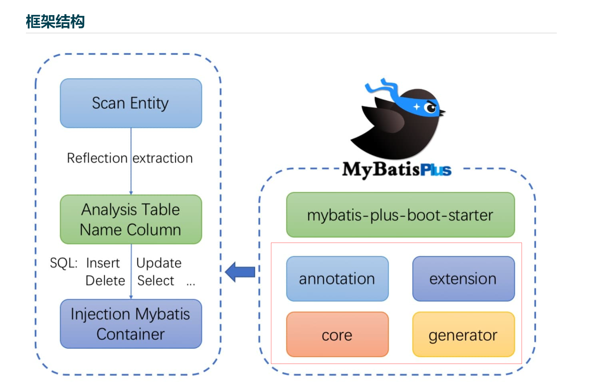
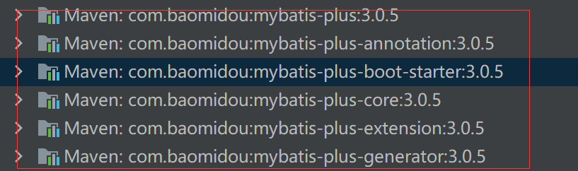
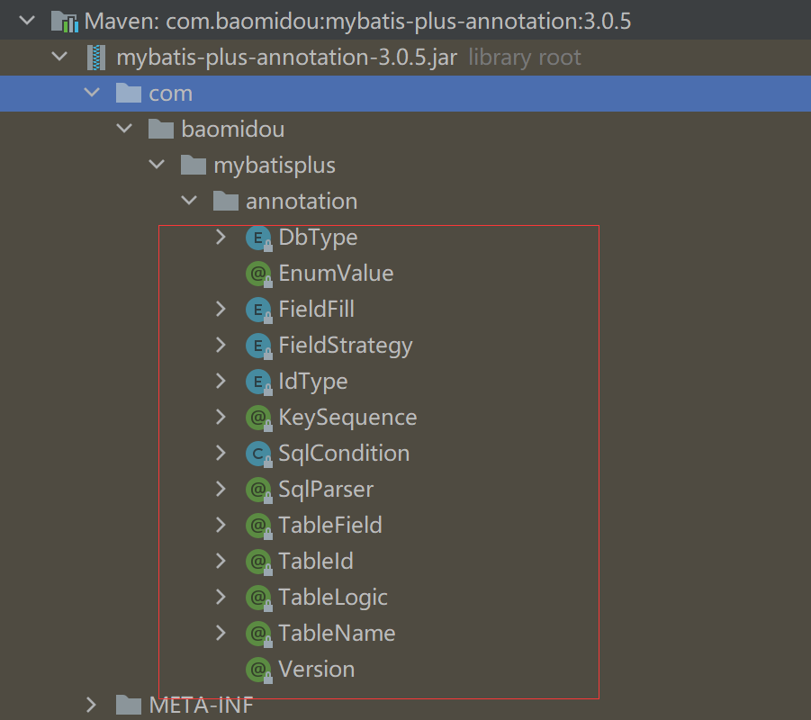
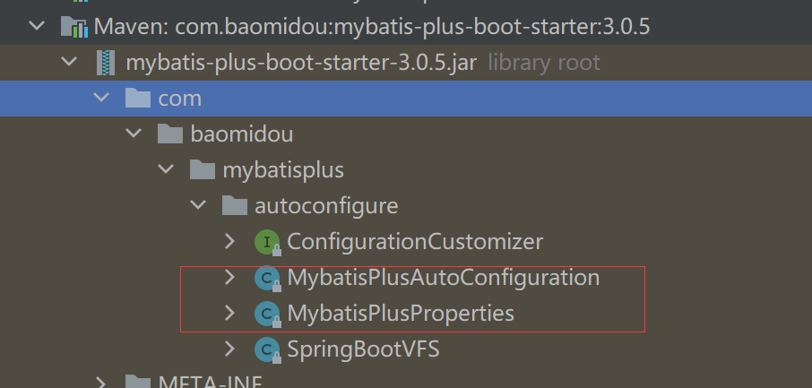
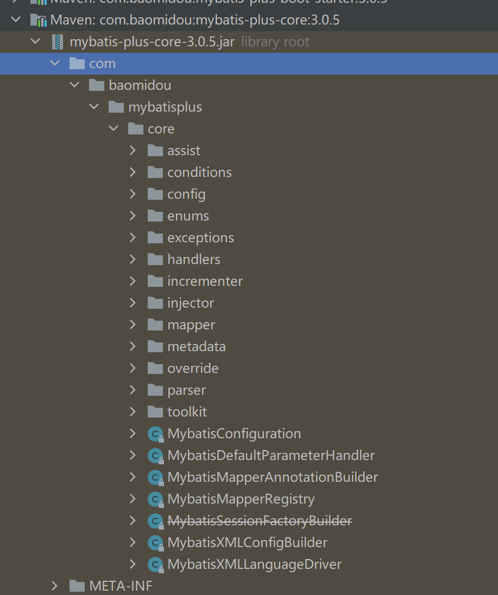
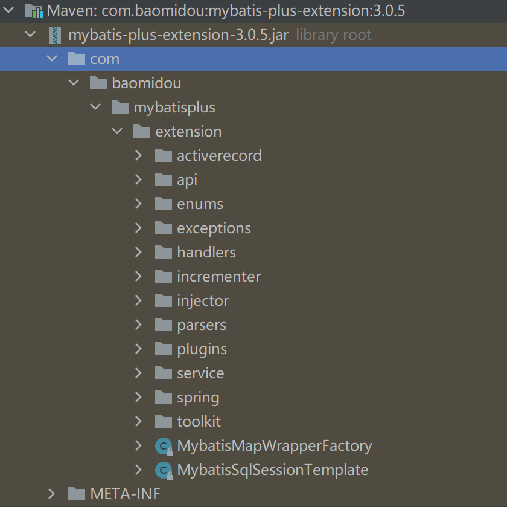
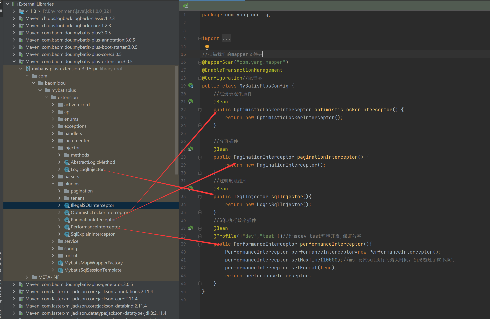
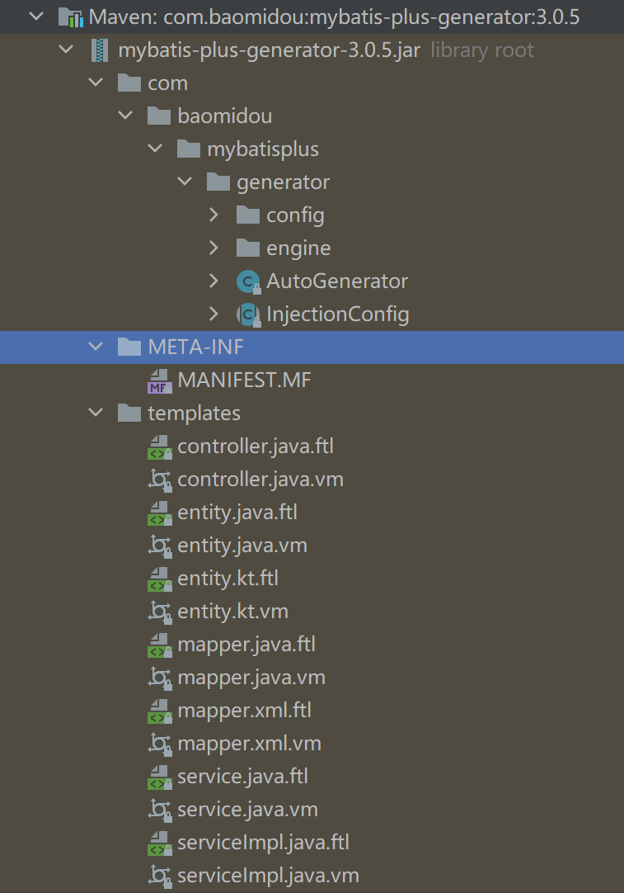
1 导入pom.xml配置文件 1 2 3 4 5 6 7 8 9 10 11 12 13 14 15 16 17 18 19 20 21 22 23 24 25 26 27 28 29 30 31 32 33 34 <dependencies > <dependency > <groupId > mysql</groupId > <artifactId > mysql-connector-java</artifactId > <scope > runtime</scope > </dependency > <dependency > <groupId > org.projectlombok</groupId > <artifactId > lombok</artifactId > </dependency > <dependency > <groupId > com.baomidou</groupId > <artifactId > mybatis-plus-boot-starter</artifactId > <version > 3.0.5</version > </dependency > <dependency > <groupId > com.h2database</groupId > <artifactId > h2</artifactId > <scope > runtime</scope > </dependency > <dependency > <groupId > org.springframework.boot</groupId > <artifactId > spring-boot-starter-web</artifactId > </dependency > <dependency > <groupId > org.springframework.boot</groupId > <artifactId > spring-boot-starter-test</artifactId > <scope > test</scope > </dependency > </dependencies >
2 连接数据库配置 1 2 3 4 5 6 spring.datasource.username=root spring.datasource.password=123456 spring.datasource.url=jdbc:mysql://localhost:3306/mybatis_plus?useSSL=false&useUnicode=true&characterEncoding=utf-8 spring.datasource.driver-class-name=com.mysql.cj.jdbc.Driver
3 编写实体类 1 2 3 4 5 6 7 8 9 10 11 12 import lombok.AllArgsConstructor;import lombok.Data;import lombok.NoArgsConstructor;@Data @AllArgsConstructor @NoArgsConstructor public class User { private Long id; private String name; private Integer age; private String email; }
4 编写实体类对应的mapper接口 1 2 3 4 5 6 7 8 9 import com.baomidou.mybatisplus.mapper.BaseMapper;import com.wsk.pojo.User;import org.springframework.stereotype.Repository;@Repository public interface UserMapper extends BaseMapper <User> { }
5 在主启动类添加@MapperScan注解 1 2 3 4 5 6 7 8 9 10 11 12 import org.mybatis.spring.annotation.MapperScan;import org.springframework.boot.SpringApplication;import org.springframework.boot.autoconfigure.SpringBootApplication;@MapperScan("com.yang.mapper") @SpringBootApplication public class MybatisPlusApplication { public static void main (String[] args) { SpringApplication.run(MybatisPlusApplication.class, args); } }
6 进行Test测试 1 2 3 4 5 6 7 8 9 10 11 12 13 14 15 16 17 18 19 20 package com.yang;import com.yang.mapper.UserMapper;import com.yang.pojo.User;import org.junit.jupiter.api.Test;import org.springframework.beans.factory.annotation.Autowired;import org.springframework.boot.test.context.SpringBootTest;import java.util.List;@SpringBootTest class MybatisPlusApplicationTests { @Autowired private UserMapper userMapper; @Test void contextLoads () { List<User> userList = userMapper.selectList(null ); userList.forEach(System.out::println); } }
配置日志 我们所有的sql是不可见的，我们希望知道他们是怎么执行的，所以要配置日志知道
1 2 mybatis-plus.configuration.log-impl =org.apache.ibatis.logging.stdout.StdOutImpl
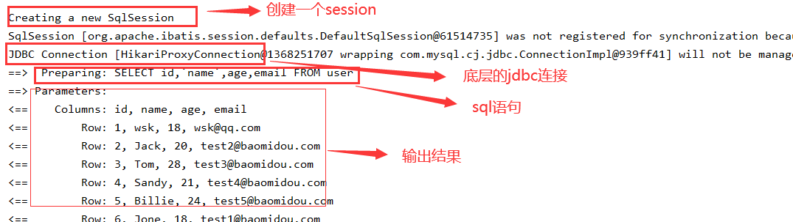
CRUD扩展 1 insert 1 2 3 4 5 6 7 8 9 10 11 12 @Test public void testInsert () { User user = new User (); user.setAge(13 ); user.setEmail("123456789@qq.com" ); user.setName("yty" ); user.setId(6L ); int insert = userMapper.insert(user); System.out.println(insert); System.out.println(user); }
预编译
2 主键生成策略 数据库插入的id的默认值为:全局的唯—id
源码解释 1 2 3 4 5 6 7 8 9 10 11 12 13 14 15 16 17 18 19 20 21 22 23 24 25 26 27 28 29 30 31 32 33 34 35 36 37 38 39 40 41 42 43 package com.baomidou.mybatisplus.annotation;import lombok.Getter;@Getter public enum IdType { AUTO(0 ), NONE(1 ), INPUT(2 ), ID_WORKER(3 ), UUID(4 ), ID_WORKER_STR(5 ); }
1 2 3 4 5 6 7 8 @TableId(type = IdType.INPUT) private Long id;
(1) 默认 : ID_WORKER 全局唯一Id 分布式系统唯一Id生成：https://www.cnblogs.com/haoxinyue/p/5208136.html
1 2 Twitter的snowflake算法: snowflake是Twitter开源的分布式ID生成算法，结果是一个long型的ID。其核心思想是：使用41bit作为毫秒数，10bit作为机器的ID（5个bit是数据中心（北京、香港···），5个bit的机器ID），12bit作为毫秒内的流水号（意味着每个节点在每毫秒可以产生 4096 个 ID），最后还有一个符号位，永远是0。
具体实现的代码可以参看：https://github.com/twitter/snowflake。
(2) 主键自增：AUTO 我们需要配置主键自增 1 2 3 在实体类字段上配置@TableId(type = IdType.AUTO) 数据库字段一定是自增
在实体类字段上配置@TableId(type = IdType.INPUT)
1 2 3 4 5 6 7 8 9 10 @Test public void testInsert () { User user = new User (); user.setAge(13 ); user.setEmail("178923456@qq.com" ); user.setName("yty" ); int insert = userMapper.insert(user); System.out.println(insert); System.out.println(user); }
3 update 1 2 3 4 5 6 7 8 9 10 11 12 @Test public void testUpdate () { User user = new User (); user.setId(1l ); user.setAge(24 ); int i = userMapper.updateById(user); System.out.println(i); }
4 自动填充 创建时间、更改时间！ 这些操作一般都是自动化完成，我们不希望手动更新
阿里巴巴开发手册︰几乎所有的表都要配置 gmt_create、gmt_modified ！而且需要自动化
方式一：数据库级别（工作中不允许修改数据库级别） 1、在表中增加字段：create_time,update_time
2、再次测试插入或更新方法，我们需要在实体类中同步！
1 2 private Date createTime;private Date updateTime;
方式二：代码级别 1、删除数据库的默认值，更新操作！
1 2 3 4 5 @TableField(fill = FieldFill.INSERT) private Date createTime;@TableField(fill = FieldFill.INSERT_UPDATE) private Date updateTime;
3、编写处理器来处理这个注解即可！
1 2 3 4 5 6 7 8 9 10 11 12 13 14 15 16 @Slf4j @Component public class MyMetaObjectHandler extends MetaObjectHandler { @Override public void insertFill (MetaObject metaObject) { log.info("==start insert ······==" ); this .setFieldValByName("createTIme" ,new Date (),metaObject); this .setFieldValByName("updateTime" ,new Date (),metaObject); } @Override public void updateFill (MetaObject metaObject) { log.info("==start update ······==" ); this .setFieldValByName("updateTime" ,new Date (),metaObject); } }
5 乐观锁与悲观锁 在面试过程中经常被问到乐观锁/悲观锁，这个其实很简单
1 2 3 乐观锁：顾名思义十分乐观,他总是认为不会出现问题,无论干什么都不上锁!如果出现了问题,再次更新值测试 悲观锁：顾名思义十分悲观,他总是认为出现问题,无论干什么都会上锁!再去操作!
乐观锁实现方式:
1 2 3 4 5 6 7 8 9 10 11 12 取出记录时,获取当前version 更新时,带上这个version 执行更新时,set version = newVersion where version = oldVersion 如果version不对,就更新失败 乐观锁：先查询，获得版本号 update user set name = "wsk",version = version+ 1 where id = 1 and version = 1 update user set name = "wsk",version = version+ 1 where id = 1 and version = 1
1、给数据库中增加version字段
2、实体类加对应的字段
1 2 @Version//乐观锁version注解 private Integer version;
3、注册组件
1 2 3 4 5 6 7 8 9 10 11 @MapperScan("com.wsk.mapper") @EnableTransactionManagement @Configuration public class MyBatisPlusConfig { @Bean public OptimisticLockerInterceptor optimisticLockerInterceptor () { return new OptimisticLockerInterceptor (); } }
4、测试一下
1 2 3 4 5 6 7 8 9 10 11 @Test public void testOptimisticLocker () { User user = userMapper.selectById(1 ); user.setName("yty" ); user.setEmail("888888@qq.com" ); userMapper.updateById(user); }
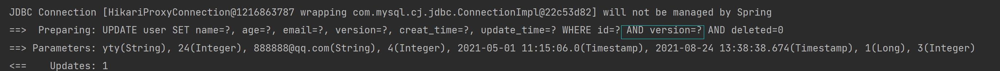
1 2 3 4 5 6 7 8 9 10 11 12 13 14 15 16 @Test public void testOptimisticLocker2 () { User user = userMapper.selectById(1 ); user.setName("yty111" ); user.setEmail("999999@qq.com" ); User user2 = userMapper.selectById(1 ); user2.setName("yty222" ); user2.setEmail("999999@qq.com" ); userMapper.updateById(user2); userMapper.updateById(user); }
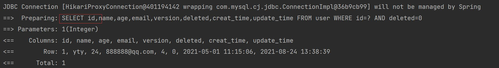
6 select
1 2 3 4 5 6 @Test public void testSelectById () { User user = userMapper.selectById(1l ); System.out.println(user); }
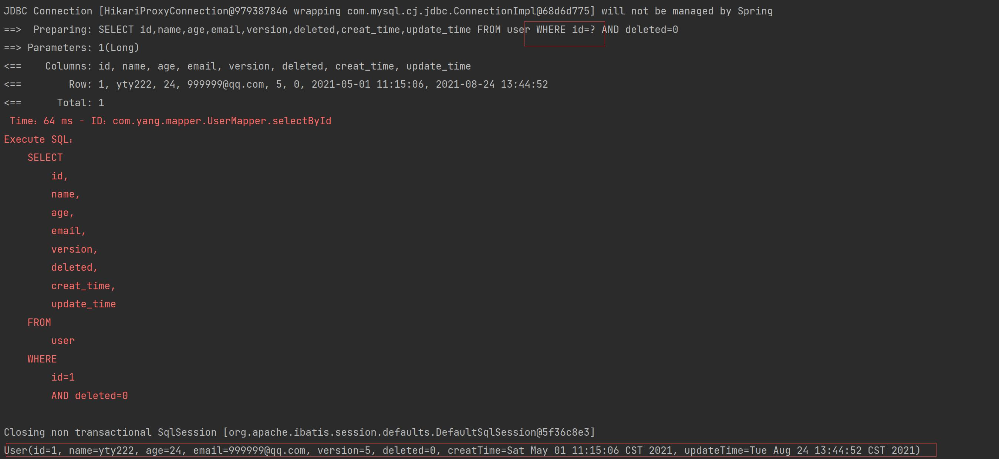
1 2 3 4 5 6 7 8 @Test public void testSelectByBatchId () { List<User> userList = userMapper.selectBatchIds(Arrays.asList(1 , 2 , 3 )); for (User user : userList) { System.out.println(user); } }
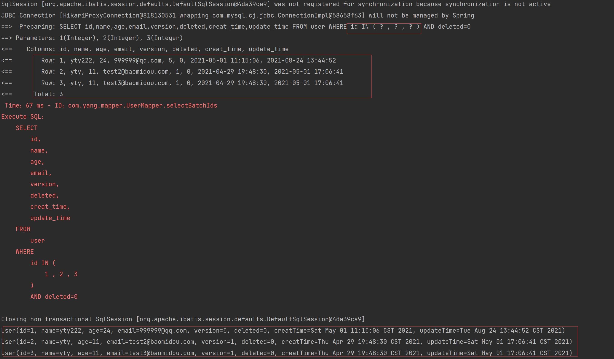
1 2 3 4 5 6 7 8 9 10 11 @Test public void testSelectByMap () { HashMap<String, Object> map = new HashMap <>(); map.put("name" ,"yty222" ); map.put("age" ,22 ); List<User> userList = userMapper.selectByMap(map); for (User user : userList) { System.out.println(user); } }
7 分页查询 分页在网站的使用十分之多！
1 2 3 4 5 1 、原始的limit分页2 、pageHelper第三方插件3 、MybatisPlus其实也内置了分页插件
如何使用：
1 2 3 4 5 @Bean public PaginationInterceptor paginationInterceptor () { return new PaginationInterceptor (); }
2、直接使用page对象即可
1 2 3 4 5 6 7 8 9 @Test public void testPage () { Page<User> page = new Page <>(2 ,5 ); userMapper.selectPage(page,null ); page.getRecords().forEach(System.out::println); System.out.println("总页数==>" +page.getTotal()); }
8 delete 基本的删除任务
1 2 3 4 5 6 7 8 9 10 11 12 13 14 15 16 17 18 @Test public void testDeleteById () { int i = userMapper.deleteById(1L ); } @Test public void testDeleteByBatchId () { int i = userMapper.deleteBatchIds(Arrays.asList(7l ,5l )); } @Test public void testDeleteByMap () { HashMap<String, Object> map = new HashMap <>(); map.put("name" , "yty" ); map.put("email" , "12345678@qq.com" ); int i = userMapper.deleteByMap(map); }
9 逻辑删除 1 2 3 物理删除：从数据库中直接删除 逻辑删除：在数据库中没有被删除，而是通过一个变量来使他失效！ deleted=0 ==> deleted=1
管理员可以查看被删除的记录！防止数据的丢失，类似于回收站！
1 2 @TableLogic private Integer deleted;
3、配置！
1 2 3 4 5 @Bean public ISqlInjector sqlInjector () { return new LogicSqlInjector (); }
1 2 3 4 5 6 7 mybatis-plus: global-config: db-config: logic-delete-field: flag logic-delete-value: 1 logic-not-delete-value: 0
4、测试一下删除
1 2 3 4 5 @Test public void testDeleteById () { int i = userMapper.deleteById(1L ); }
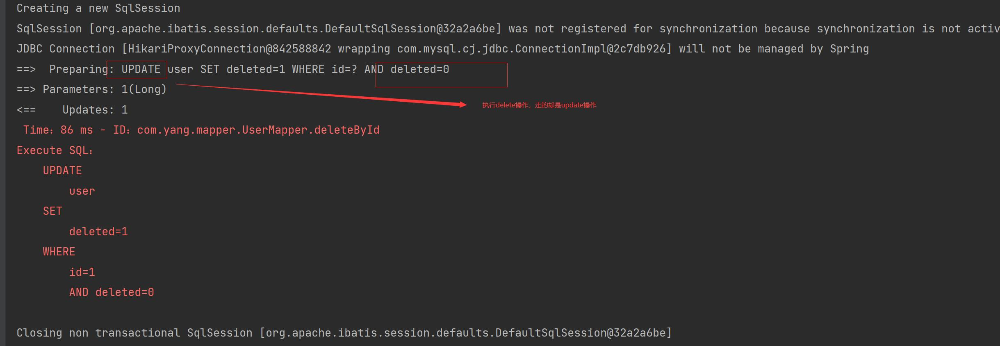再次测试查询被删除的用户，发现查询为空
1 2 3 4 5 @Test public void testSelectById () { User user = userMapper.selectById(1l ); System.out.println(user); }
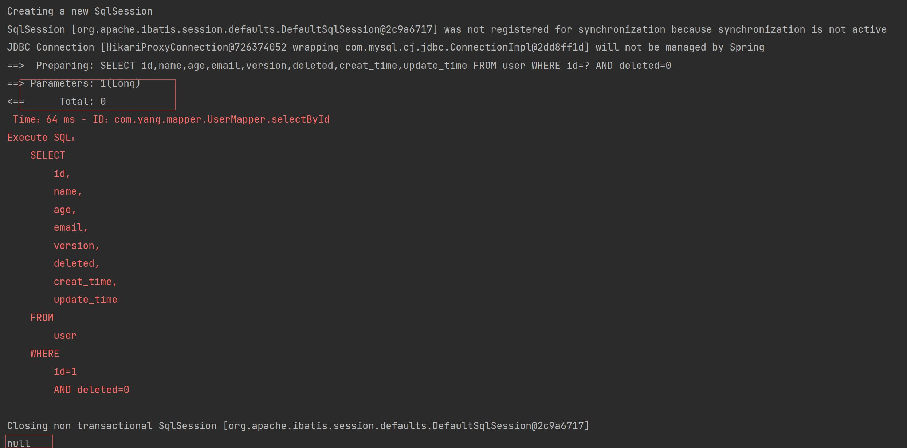
性能分析插件 MybatisPlus也提供了性能分析插件，如果超过这个时间就停止运行！
性能分析拦截器作用：用于输出每条sql语句及其执行时间
1 2 3 4 5 6 7 8 9 @Bean @Profile({"dev","test"}) public PerformanceInterceptor performanceInterceptor () { PerformanceInterceptor performanceInterceptor = new PerformanceInterceptor (); performanceInterceptor.setMaxTime(100 ); performanceInterceptor.setFormat(true ); return performanceInterceptor; }
注意： 要在SpringBoot中配置环境为dev或test环境！
1 2 spring.profiles.active =dev
2、测试使用
1 2 3 4 5 6 7 @Test void contextLoads () { List<User> userList = userMapper.selectList(null ); userList.forEach(System.out::println); }
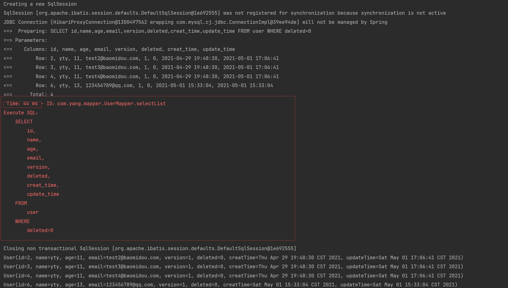
条件构造器 测试一
1 2 3 4 5 6 7 8 9 10 11 12 @Test public void testWrapper1 () { QueryWrapper<User> wrapper = new QueryWrapper <>(); wrapper .isNotNull("name" ) .isNotNull("email" ) .ge("age" ,18 ); List<User> userList = userMapper.selectList(wrapper); userList.forEach(System.out::println); }
测试二
1 2 3 4 5 6 7 8 9 10 11 @Test public void testWrapper2 () { QueryWrapper<User> wrapper = new QueryWrapper <>(); wrapper.eq("name" ,"wsk" ); User user = userMapper.selectOne(wrapper); System.out.println(user); }
测试三
1 2 3 4 5 6 7 8 @Test public void testWrapper3 () { QueryWrapper<User> wrapper = new QueryWrapper <>(); wrapper.between("age" , 10 , 20 ); Integer count = userMapper.selectCount(wrapper); System.out.println(count); }
测试四
1 2 3 4 5 6 7 8 9 10 @Test public void testWrapper4 () { QueryWrapper<User> wrapper = new QueryWrapper <>(); wrapper .notLike("name" ,"s" ) .likeRight("email" ,"t" ); List<Map<String, Object>> maps = userMapper.selectMaps(wrapper); maps.forEach(System.out::println); }
测试五
1 2 3 4 5 6 7 8 9 10 11 12 13 @Test public void testWrapper5 () { QueryWrapper<User> wrapper = new QueryWrapper <>(); wrapper.inSql("id" ,"select id from user where id<5" ); List<Object> objects = userMapper.selectObjs(wrapper); objects.forEach(System.out::println); }
测试六
1 2 3 4 5 6 7 8 @Test public void testWrapper6 () { QueryWrapper<User> wrapper = new QueryWrapper <>(); wrapper.orderByDesc("id" ); List<User> userList = userMapper.selectList(wrapper); userList.forEach(System.out::println); }
代码自动生成器 1 2 3 4 5 6 7 8 9 10 11 12 13 14 15 16 17 18 19 20 21 22 23 24 25 26 27 28 29 30 31 32 33 34 35 36 37 38 39 40 41 42 43 44 45 46 47 48 49 50 51 52 53 54 55 56 57 58 59 60 61 62 63 64 65 66 67 68 69 70 71 package com.yang;import com.baomidou.mybatisplus.annotation.DbType;import com.baomidou.mybatisplus.annotation.FieldFill;import com.baomidou.mybatisplus.annotation.IdType;import com.baomidou.mybatisplus.annotation.TableField;import com.baomidou.mybatisplus.generator.AutoGenerator;import com.baomidou.mybatisplus.generator.config.DataSourceConfig;import com.baomidou.mybatisplus.generator.config.GlobalConfig;import com.baomidou.mybatisplus.generator.config.PackageConfig;import com.baomidou.mybatisplus.generator.config.StrategyConfig;import com.baomidou.mybatisplus.generator.config.po.TableFill;import com.baomidou.mybatisplus.generator.config.rules.DateType;import com.baomidou.mybatisplus.generator.config.rules.NamingStrategy;import java.util.ArrayList;public class yangCode { public static void main (String[] args) { AutoGenerator mpg = new AutoGenerator (); GlobalConfig gc = new GlobalConfig (); String projectPath = System.getProperty("user.dir" ); gc.setOutputDir(projectPath+"/src/main/java" ); gc.setAuthor("yty" ); gc.setOpen(false ); gc.setFileOverride(false ); gc.setServiceName("%sService" ); gc.setIdType(IdType.ID_WORKER); gc.setDateType(DateType.ONLY_DATE); gc.setSwagger2(true ); mpg.setGlobalConfig(gc); DataSourceConfig dsc = new DataSourceConfig (); dsc.setUrl("jdbc:mysql://localhost:3306/mybatis_plus? useSSL=false&useUnicode=true&characterEncoding=utf-8&serverTimezone=GMT%2B8" ); dsc.setDriverName("com.mysql.cj.jdbc.Driver" ); dsc.setUsername("root" ); dsc.setPassword("123456" ); dsc.setDbType(DbType.MYSQL); mpg.setDataSource(dsc); PackageConfig pc = new PackageConfig (); pc.setModuleName("blog" ); pc.setParent("com.yang" ); pc.setEntity("entity" ); pc.setMapper("mapper" ); pc.setService("service" ); pc.setController("controller" ); mpg.setPackageInfo(pc); StrategyConfig strategy = new StrategyConfig (); strategy.setInclude("blog_tags" ,"course" ,"links" ,"sys_settings" ,"user_record" ,"user_say" ); strategy.setNaming(NamingStrategy.underline_to_camel); strategy.setColumnNaming(NamingStrategy.underline_to_camel); strategy.setEntityLombokModel(true ); strategy.setLogicDeleteFieldName("deleted" ); TableFill gmtCreate = new TableFill ("gmt_create" , FieldFill.INSERT); TableFill gmtModified = new TableFill ("gmt_modified" ,FieldFill.INSERT_UPDATE); ArrayList<TableFill> tableFills = new ArrayList <>(); tableFills.add(gmtCreate); tableFills.add(gmtModified); strategy.setTableFillList(tableFills); strategy.setVersionFieldName("version" );strategy.setRestControllerStyle(true ); strategy.setControllerMappingHyphenStyle(true ); mpg.setStrategy(strategy); mpg.execute(); } }
BaseMapper源码 1 2 3 4 5 6 7 8 9 10 11 12 13 14 15 16 17 18 19 20 21 22 23 24 25 26 27 28 29 30 31 32 33 34 35 36 37 38 39 40 41 42 43 44 45 46 47 48 49 50 51 52 53 54 55 56 57 58 59 60 61 62 63 64 65 66 67 68 69 70 71 72 73 74 75 76 77 78 79 80 81 82 83 84 85 86 87 88 89 90 91 92 93 94 95 96 97 98 99 100 101 102 103 104 105 106 107 108 109 110 111 112 113 114 115 116 117 118 119 120 121 122 123 124 125 126 127 128 129 130 131 132 133 134 135 136 137 138 139 140 141 142 143 144 145 146 147 148 149 150 151 152 153 154 155 156 157 158 159 160 161 162 163 164 165 166 167 168 169 170 171 172 173 174 175 176 177 178 179 180 181 182 183 184 185 186 187 188 189 190 191 192 193 194 195 196 197 198 199 200 201 202 203 204 205 206 207 208 209 210 211 212 213 214 215 216 217 218 219 220 221 222 223 224 225 226 227 228 229 230 231 package com.baomidou.mybatisplus.core.mapper;import java.io.Serializable;import java.util.Collection;import java.util.List;import java.util.Map;import org.apache.ibatis.annotations.Param;import com.baomidou.mybatisplus.core.conditions.Wrapper;import com.baomidou.mybatisplus.core.metadata.IPage;import com.baomidou.mybatisplus.core.toolkit.Constants;public interface BaseMapper <T> { int insert (T entity) ; int deleteById (Serializable id) ; int deleteByMap (@Param(Constants.COLUMN_MAP) Map<String, Object> columnMap) ; int delete (@Param(Constants.WRAPPER) Wrapper<T> queryWrapper) ; int deleteBatchIds (@Param(Constants.COLLECTION) Collection<? extends Serializable> idList) ; int updateById (@Param(Constants.ENTITY) T entity) ; int update (@Param(Constants.ENTITY) T entity, @Param(Constants.WRAPPER) Wrapper<T> updateWrapper) ; T selectById (Serializable id) ; List<T> selectBatchIds (@Param(Constants.COLLECTION) Collection<? extends Serializable> idList) ; List<T> selectByMap (@Param(Constants.COLUMN_MAP) Map<String, Object> columnMap) ; T selectOne (@Param(Constants.WRAPPER) Wrapper<T> queryWrapper) ; Integer selectCount (@Param(Constants.WRAPPER) Wrapper<T> queryWrapper) ; List<T> selectList (@Param(Constants.WRAPPER) Wrapper<T> queryWrapper) ; List<Map<String, Object>> selectMaps (@Param(Constants.WRAPPER) Wrapper<T> queryWrapper) ; List<Object> selectObjs (@Param(Constants.WRAPPER) Wrapper<T> queryWrapper) ; IPage<T> selectPage (IPage<T> page, @Param(Constants.WRAPPER) Wrapper<T> queryWrapper) ; IPage<Map<String, Object>> selectMapsPage (IPage<T> page, @Param(Constants.WRAPPER) Wrapper<T> queryWrapper) ; }
分析：
1个增加方法：
4个删除
1 2 3 4 int deleteById (Serializable id) ;int deleteByMap (@Param(Constants.COLUMN_MAP) Map<String, Object> columnMap) ;int delete (@Param(Constants.WRAPPER) Wrapper<T> queryWrapper) ;int deleteBatchIds (@Param(Constants.COLLECTION) Collection<? extends Serializable> idList) ;
2个更改
1 2 3 int updateById (@Param(Constants.ENTITY) T entity) ;int update (@Param(Constants.ENTITY) T entity, @Param(Constants.WRAPPER) Wrapper<T> updateWrapper) ;
10个查询
1 2 3 4 5 6 7 8 9 10 11 12 13 14 15 16 17 18 19 20 21 22 23 24 25 26 27 28 29 30 31 32 33 34 35 36 37 38 39 40 41 42 43 44 45 46 47 48 49 50 51 52 53 54 55 56 57 58 59 60 61 62 63 64 65 66 67 68 69 70 71 72 73 74 75 76 77 78 79 80 81 82 83 84 85 86 87 88 89 90 91 T selectById (Serializable id) ; List<T> selectBatchIds (@Param(Constants.COLLECTION) Collection<? extends Serializable> idList) ; List<T> selectByMap (@Param(Constants.COLUMN_MAP) Map<String, Object> columnMap) ; T selectOne (@Param(Constants.WRAPPER) Wrapper<T> queryWrapper) ; List<T> selectList (@Param(Constants.WRAPPER) Wrapper<T> queryWrapper) ; Integer selectCount (@Param(Constants.WRAPPER) Wrapper<T> queryWrapper) ; List<Map<String, Object>> selectMaps (@Param(Constants.WRAPPER) Wrapper<T> queryWrapper) ; List<Object> selectObjs (@Param(Constants.WRAPPER) Wrapper<T> queryWrapper) ; IPage<T> selectPage (IPage<T> page, @Param(Constants.WRAPPER) Wrapper<T> queryWrapper) ; IPage<Map<String, Object>> selectMapsPage (IPage<T> page, @Param(Constants.WRAPPER) Wrapper<T> queryWrapper) ; package com.yang.config;import com.baomidou.mybatisplus.core.injector.ISqlInjector;import com.baomidou.mybatisplus.extension.injector.LogicSqlInjector;import com.baomidou.mybatisplus.extension.plugins.OptimisticLockerInterceptor;import com.baomidou.mybatisplus.extension.plugins.PaginationInterceptor;import com.baomidou.mybatisplus.extension.plugins.PerformanceInterceptor;import org.mybatis.spring.annotation.MapperScan;import org.springframework.context.annotation.Bean;import org.springframework.context.annotation.Configuration;import org.springframework.context.annotation.Profile;import org.springframework.transaction.annotation.EnableTransactionManagement;@MapperScan("com.yang.mapper") @EnableTransactionManagement @Configuration public class MyBatisPlusConfig { @Bean public OptimisticLockerInterceptor optimisticLockerInterceptor () { return new OptimisticLockerInterceptor (); } @Bean public PaginationInterceptor paginationInterceptor () { return new PaginationInterceptor (); } @Bean public ISqlInjector sqlInjector () { return new LogicSqlInjector (); } @Bean @Profile({"dev","test"}) public PerformanceInterceptor performanceInterceptor () { PerformanceInterceptor performanceInterceptor=new PerformanceInterceptor (); performanceInterceptor.setMaxTime(10000 ); performanceInterceptor.setFormat(true ); return performanceInterceptor; } } package com.yang.handler;import com.baomidou.mybatisplus.core.handlers.MetaObjectHandler;import lombok.extern.slf4j.Slf4j;import org.apache.ibatis.reflection.MetaObject;import org.springframework.stereotype.Component;import java.util.Date;@Slf4j @Component public class MyMetaObjectHandler implements MetaObjectHandler { @Override public void insertFill (MetaObject metaObject) { log.info("start insert fill... ..." ); this .setFieldValByName("creatTime" ,new Date (),metaObject); this .setFieldValByName("updateTime" ,new Date (),metaObject); } @Override public void updateFill (MetaObject metaObject) { log.info("start update fill... ..." ); this .setFieldValByName("updateTime" ,new Date (),metaObject); } }
1 2 3 4 5 6 7 8 9 10 11 12 13 14 15 16 17 18 19 20 21 22 23 24 25 26 27 28 29 30 31 32 33 34 35 36 37 38 39 40 41 42 43 44 45 46 47 48 49 50 51 52 53 54 55 56 57 58 59 60 61 62 63 64 65 66 67 68 69 70 71 72 73 74 75 76 77 78 79 80 81 82 83 84 85 86 87 88 89 90 91 92 93 94 95 96 97 98 99 100 101 102 103 104 105 106 107 108 109 110 111 112 113 114 115 116 117 118 119 120 121 122 123 124 125 126 127 128 129 130 131 132 133 134 135 136 137 138 139 140 141 142 143 144 145 146 147 148 149 150 151 152 153 154 155 156 157 158 159 160 161 162 163 164 165 166 167 168 169 170 171 172 173 174 175 176 177 178 179 180 181 182 183 184 185 186 187 188 189 190 191 192 193 194 195 196 197 198 199 200 201 202 203 204 205 206 207 208 209 210 211 212 213 214 215 216 217 218 219 220 221 222 223 224 225 226 227 228 229 230 231 232 233 234 235 236 237 238 239 240 241 242 243 244 245 246 247 248 249 250 251 252 253 254 255 256 257 258 259 260 261 262 263 264 265 266 267 268 269 270 271 272 273 274 275 276 package com.baomidou.mybatisplus.extension.service;import java.io.Serializable;import java.util.Collection;import java.util.List;import java.util.Map;import com.baomidou.mybatisplus.core.conditions.Wrapper;import com.baomidou.mybatisplus.core.metadata.IPage;public interface IService <T> { boolean save (T entity) ; default boolean saveBatch (Collection<T> entityList) { return saveBatch(entityList, 30 ); } boolean saveBatch (Collection<T> entityList, int batchSize) ; boolean saveOrUpdateBatch (Collection<T> entityList) ; boolean saveOrUpdateBatch (Collection<T> entityList, int batchSize) ; boolean removeById (Serializable id) ; boolean removeByMap (Map<String, Object> columnMap) ; boolean remove (Wrapper<T> queryWrapper) ; boolean removeByIds (Collection<? extends Serializable> idList) ; boolean updateById (T entity) ; boolean update (T entity, Wrapper<T> updateWrapper) ; default boolean updateBatchById (Collection<T> entityList) { return updateBatchById(entityList, 30 ); } boolean updateBatchById (Collection<T> entityList, int batchSize) ; boolean saveOrUpdate (T entity) ; T getById (Serializable id) ; Collection<T> listByIds (Collection<? extends Serializable> idList) ; Collection<T> listByMap (Map<String, Object> columnMap) ; default T getOne (Wrapper<T> queryWrapper) { return getOne(queryWrapper, false ); } T getOne (Wrapper<T> queryWrapper, boolean throwEx) ; Map<String, Object> getMap (Wrapper<T> queryWrapper) ; Object getObj (Wrapper<T> queryWrapper) ; int count (Wrapper<T> queryWrapper) ; List<T> list (Wrapper<T> queryWrapper) ; IPage<T> page (IPage<T> page, Wrapper<T> queryWrapper) ; List<Map<String, Object>> listMaps (Wrapper<T> queryWrapper) ; List<Object> listObjs (Wrapper<T> queryWrapper) ; IPage<Map<String, Object>> pageMaps (IPage<T> page, Wrapper<T> queryWrapper) ; }
1 2 3 4 5 6 7 8 9 10 11 12 13 14 15 16 17 18 19 20 21 22 23 24 25 26 27 28 29 30 31 32 33 34 35 36 37 38 39 40 41 42 43 44 45 46 47 48 49 50 51 52 53 54 55 56 57 58 59 60 61 62 63 64 65 66 67 68 69 70 71 72 73 74 75 76 77 78 79 80 81 82 83 84 85 86 87 88 89 90 91 92 93 94 95 96 97 98 99 100 101 102 103 104 105 106 107 108 109 110 111 112 113 114 115 116 117 118 119 120 121 122 123 124 125 126 127 128 129 130 131 132 133 134 135 136 137 138 139 140 141 142 143 144 145 146 147 148 149 150 151 152 153 154 155 156 157 158 159 160 161 162 163 164 165 166 167 168 169 170 171 172 173 174 175 176 177 178 179 180 181 182 183 184 185 186 187 188 189 190 191 192 193 194 195 196 197 198 199 200 201 202 203 204 205 206 207 208 209 210 211 212 213 214 215 216 217 218 219 220 221 222 223 224 225 226 227 228 229 230 231 232 233 234 235 236 237 238 239 240 241 242 243 244 245 246 247 248 249 250 251 252 253 254 255 256 257 258 259 260 261 262 263 264 265 266 267 268 269 270 271 272 273 274 275 276 277 278 279 280 281 282 283 284 285 286 287 288 289 290 291 292 293 294 295 296 297 298 299 300 301 302 303 304 305 306 307 308 309 310 311 312 313 314 315 316 317 318 319 320 321 322 package com.baomidou.mybatisplus.extension.service.impl;import java.io.Serializable;import java.util.Collection;import java.util.List;import java.util.Map;import java.util.Objects;import java.util.stream.Collectors;import org.apache.ibatis.binding.MapperMethod;import org.apache.ibatis.session.SqlSession;import org.mybatis.spring.SqlSessionUtils;import org.springframework.beans.factory.annotation.Autowired;import org.springframework.transaction.annotation.Transactional;import com.baomidou.mybatisplus.core.conditions.Wrapper;import com.baomidou.mybatisplus.core.enums.SqlMethod;import com.baomidou.mybatisplus.core.mapper.BaseMapper;import com.baomidou.mybatisplus.core.metadata.IPage;import com.baomidou.mybatisplus.core.metadata.TableInfo;import com.baomidou.mybatisplus.core.toolkit.CollectionUtils;import com.baomidou.mybatisplus.core.toolkit.Constants;import com.baomidou.mybatisplus.core.toolkit.ExceptionUtils;import com.baomidou.mybatisplus.core.toolkit.GlobalConfigUtils;import com.baomidou.mybatisplus.core.toolkit.ObjectUtils;import com.baomidou.mybatisplus.core.toolkit.ReflectionKit;import com.baomidou.mybatisplus.core.toolkit.StringUtils;import com.baomidou.mybatisplus.core.toolkit.TableInfoHelper;import com.baomidou.mybatisplus.core.toolkit.sql.SqlHelper;import com.baomidou.mybatisplus.extension.service.IService;@SuppressWarnings("unchecked") public class ServiceImpl <M extends BaseMapper <T>, T> implements IService <T> { @Autowired protected M baseMapper; protected boolean retBool (Integer result) { return SqlHelper.retBool(result); } protected Class<T> currentModelClass () { return ReflectionKit.getSuperClassGenericType(getClass(), 1 ); } protected SqlSession sqlSessionBatch () { return SqlHelper.sqlSessionBatch(currentModelClass()); } protected void closeSqlSession (SqlSession sqlSession) { SqlSessionUtils.closeSqlSession(sqlSession, GlobalConfigUtils.currentSessionFactory(currentModelClass())); } protected String sqlStatement (SqlMethod sqlMethod) { return SqlHelper.table(currentModelClass()).getSqlStatement(sqlMethod.getMethod()); } @Transactional(rollbackFor = Exception.class) @Override public boolean save (T entity) { return retBool(baseMapper.insert(entity)); } @Transactional(rollbackFor = Exception.class) @Override public boolean saveBatch (Collection<T> entityList, int batchSize) { int i = 0 ; String sqlStatement = sqlStatement(SqlMethod.INSERT_ONE); try (SqlSession batchSqlSession = sqlSessionBatch()) { for (T anEntityList : entityList) { batchSqlSession.insert(sqlStatement, anEntityList); if (i >= 1 && i % batchSize == 0 ) { batchSqlSession.flushStatements(); } i++; } batchSqlSession.flushStatements(); } return true ; } @Transactional(rollbackFor = Exception.class) @Override public boolean saveOrUpdate (T entity) { if (null != entity) { Class<?> cls = entity.getClass(); TableInfo tableInfo = TableInfoHelper.getTableInfo(cls); if (null != tableInfo && StringUtils.isNotEmpty(tableInfo.getKeyProperty())) { Object idVal = ReflectionKit.getMethodValue(cls, entity, tableInfo.getKeyProperty()); if (StringUtils.checkValNull(idVal)) { return save(entity); } else { return updateById(entity) || save(entity); } } else { throw ExceptionUtils.mpe("Error: Can not execute. Could not find @TableId." ); } } return false ; } @Transactional(rollbackFor = Exception.class) @Override public boolean saveOrUpdateBatch (Collection<T> entityList) { return saveOrUpdateBatch(entityList, 30 ); } @Transactional(rollbackFor = Exception.class) @Override public boolean saveOrUpdateBatch (Collection<T> entityList, int batchSize) { if (CollectionUtils.isEmpty(entityList)) { throw new IllegalArgumentException ("Error: entityList must not be empty" ); } Class<?> cls = null ; TableInfo tableInfo = null ; int i = 0 ; try (SqlSession batchSqlSession = sqlSessionBatch()) { for (T anEntityList : entityList) { if (i == 0 ) { cls = anEntityList.getClass(); tableInfo = TableInfoHelper.getTableInfo(cls); } if (null != tableInfo && StringUtils.isNotEmpty(tableInfo.getKeyProperty())) { Object idVal = ReflectionKit.getMethodValue(cls, anEntityList, tableInfo.getKeyProperty()); if (StringUtils.checkValNull(idVal)) { String sqlStatement = sqlStatement(SqlMethod.INSERT_ONE); batchSqlSession.insert(sqlStatement, anEntityList); } else { String sqlStatement = sqlStatement(SqlMethod.UPDATE_BY_ID); MapperMethod.ParamMap<T> param = new MapperMethod .ParamMap<>(); param.put(Constants.ENTITY, anEntityList); batchSqlSession.update(sqlStatement, param); } if (i >= 1 && i % batchSize == 0 ) { batchSqlSession.flushStatements(); } i++; } else { throw ExceptionUtils.mpe("Error: Can not execute. Could not find @TableId." ); } batchSqlSession.flushStatements(); } } return true ; } @Transactional(rollbackFor = Exception.class) @Override public boolean removeById (Serializable id) { return SqlHelper.delBool(baseMapper.deleteById(id)); } @Transactional(rollbackFor = Exception.class) @Override public boolean removeByMap (Map<String, Object> columnMap) { if (ObjectUtils.isEmpty(columnMap)) { throw ExceptionUtils.mpe("removeByMap columnMap is empty." ); } return SqlHelper.delBool(baseMapper.deleteByMap(columnMap)); } @Transactional(rollbackFor = Exception.class) @Override public boolean remove (Wrapper<T> wrapper) { return SqlHelper.delBool(baseMapper.delete(wrapper)); } @Transactional(rollbackFor = Exception.class) @Override public boolean removeByIds (Collection<? extends Serializable> idList) { return SqlHelper.delBool(baseMapper.deleteBatchIds(idList)); } @Transactional(rollbackFor = Exception.class) @Override public boolean updateById (T entity) { return retBool(baseMapper.updateById(entity)); } @Transactional(rollbackFor = Exception.class) @Override public boolean update (T entity, Wrapper<T> updateWrapper) { return retBool(baseMapper.update(entity, updateWrapper)); } @Transactional(rollbackFor = Exception.class) @Override public boolean updateBatchById (Collection<T> entityList, int batchSize) { if (CollectionUtils.isEmpty(entityList)) { throw new IllegalArgumentException ("Error: entityList must not be empty" ); } int i = 0 ; String sqlStatement = sqlStatement(SqlMethod.UPDATE_BY_ID); try (SqlSession batchSqlSession = sqlSessionBatch()) { for (T anEntityList : entityList) { MapperMethod.ParamMap<T> param = new MapperMethod .ParamMap<>(); param.put(Constants.ENTITY, anEntityList); batchSqlSession.update(sqlStatement, param); if (i >= 1 && i % batchSize == 0 ) { batchSqlSession.flushStatements(); } i++; } batchSqlSession.flushStatements(); } return true ; } @Override public T getById (Serializable id) { return baseMapper.selectById(id); } @Override public Collection<T> listByIds (Collection<? extends Serializable> idList) { return baseMapper.selectBatchIds(idList); } @Override public Collection<T> listByMap (Map<String, Object> columnMap) { return baseMapper.selectByMap(columnMap); } @Override public T getOne (Wrapper<T> queryWrapper, boolean throwEx) { if (throwEx) { return baseMapper.selectOne(queryWrapper); } return SqlHelper.getObject(baseMapper.selectList(queryWrapper)); } @Override public Map<String, Object> getMap (Wrapper<T> queryWrapper) { return SqlHelper.getObject(baseMapper.selectMaps(queryWrapper)); } @Override public Object getObj (Wrapper<T> queryWrapper) { return SqlHelper.getObject(baseMapper.selectObjs(queryWrapper)); } @Override public int count (Wrapper<T> queryWrapper) { return SqlHelper.retCount(baseMapper.selectCount(queryWrapper)); } @Override public List<T> list (Wrapper<T> queryWrapper) { return baseMapper.selectList(queryWrapper); } @Override public IPage<T> page (IPage<T> page, Wrapper<T> queryWrapper) { return baseMapper.selectPage(page, queryWrapper); } @Override public List<Map<String, Object>> listMaps (Wrapper<T> queryWrapper) { return baseMapper.selectMaps(queryWrapper); } @Override public List<Object> listObjs (Wrapper<T> queryWrapper) { return baseMapper.selectObjs(queryWrapper).stream().filter(Objects::nonNull).collect(Collectors.toList()); } @Override public IPage<Map<String, Object>> pageMaps (IPage<T> page, Wrapper<T> queryWrapper) { return baseMapper.selectMapsPage(page, queryWrapper); } }


 )
)